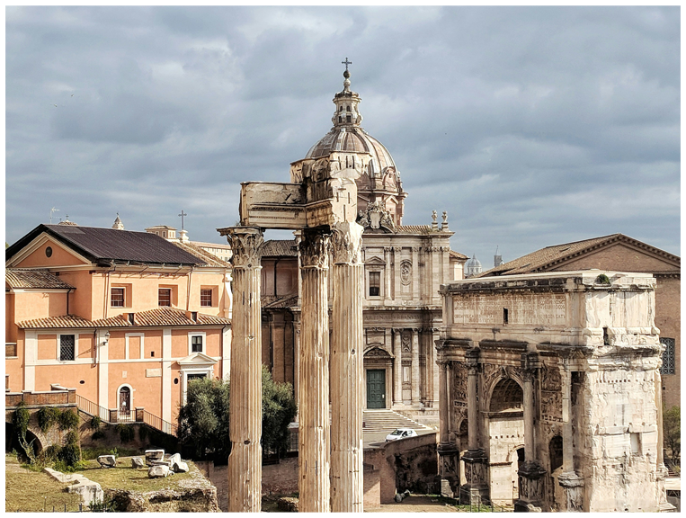
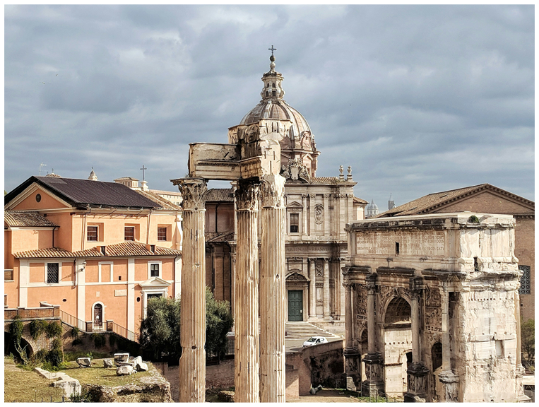
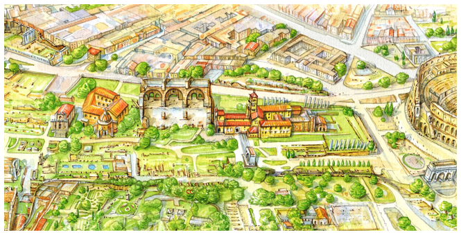

HOW IT WAS BUILT
The construction of the Roman Forum evolved over many centuries, beginning in the 7th century BCE under the early Roman kings.
Originally a marshy area, the land was drained through the Cloaca Maxima, one of the world’s first sewage systems, to make way for a public space.
Major reconstruction occurred during Julius Caesar’s and Augustus’ reigns, adding monumental temples and arches.
The structures were built using travertine, marble, and tufa stone, with materials like bronze imported from across the empire.


 Click to see more info
Click to see more info